Carbon dioxide exchange and carbonate minerals
Week 2 — Aquatic composition and carbonate chemistry
About this lecture
In parts of Skåne and on Gotland, where the bedrock contains limestone, tap water is hard. Kettles there grow a white crust within weeks. In much of northern Sweden, on granite, they hardly scale at all.
The crust is calcite, CaCO₃: the same mineral that liming adds to lakes. Why does it come out of the water when you boil it?
Today you will learn to:
- use Henry’s law to connect dissolved CO₂ to the air;
- explain why CO₂ uptake raises CT but not alkalinity, unlike strong acid;
- judge mineral stability with the saturation state Ω;
- separate what is favoured from what is fast.
 Limescale (CaCO₃) from a kettle. Photo: Alexander Davronov, CC BY-SA 4.0, Wikimedia Commons.
Limescale (CaCO₃) from a kettle. Photo: Alexander Davronov, CC BY-SA 4.0, Wikimedia Commons.
Opening the box
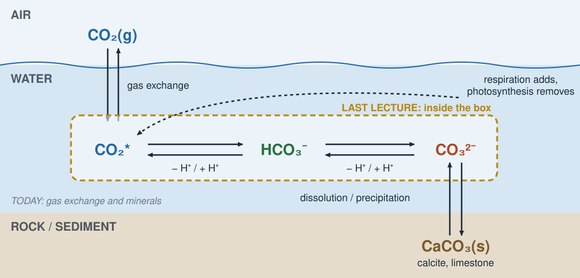
Last lecture we worked inside the dashed box: CT was fixed and carbon only changed form. Today we open two of the doors: gas exchange with the air and dissolution and precipitation of calcite. Each changes CT, alkalinity, or both, in a definite way.
Water meets air: Henry’s law
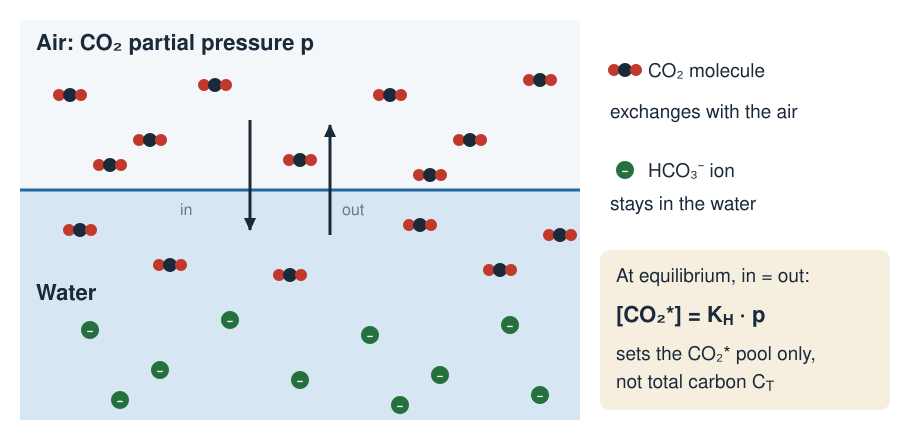
CO₂ molecules cross the water surface in both directions. At equilibrium the two fluxes are equal and
[\mathrm{CO_2^*}]=K_H\,p_{\mathrm{CO_2}}
with K_H=0.034 mol L⁻¹ atm⁻¹ at 25 °C and p in atm.
Henry’s law fixes only the CO₂* pool. Bicarbonate and carbonate ions cannot leave the water; they follow through the acid–base equilibria.
A worked Henry calculation
Take p_{\mathrm{CO_2}}=4.00\times10^{-4} atm (the exercise value):
[\mathrm{CO_2^*}]=0.034\times4.00\times10^{-4}=1.36\times10^{-5}\ \mathrm{mol/L}
That is 13.6 µmol/L. The atm units cancel.
The relation is linear: ten times more CO₂ in the gas gives ten times more CO₂*. Soil air often holds around 1% CO₂, so soil water can carry far more CO₂* than water at the surface.
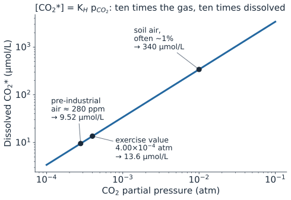
Henry gives CO₂*, not total carbon
If the same water is also specified to have pH 8.35, the ratio rule from last lecture gives the rest:
C_T=[\mathrm{CO_2^*}](1+r_1+r_1r_2)
With r_1=100 and r_2\approx0.0105:
C_T\approx13.6\times102.05\approx 1388 µmol/L
The gas pool is only 1% of the dissolved carbon. Applying Henry’s law to CT would be off by a factor of 100.
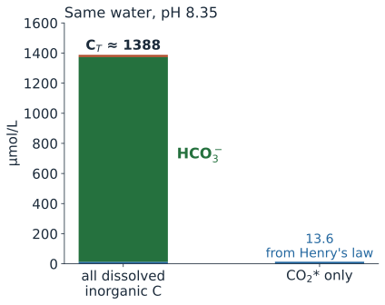
Why clean rain is acidic
Pure water in contact with air has no alkalinity. The only source of H⁺ is dissolved CO₂:
\mathrm{CO_2^*+H_2O\rightleftharpoons H^++HCO_3^-}
With no other ions, [H⁺] ≈ [HCO₃⁻], so
[\mathrm{H^+}]^2\approx K_1[\mathrm{CO_2^*}]=10^{-6.35}\times1.36\times10^{-5}
[H⁺] ≈ 2.5 × 10⁻⁶ mol/L, pH ≈ 5.6.
This is why “acid rain” means rain below about 5.6.
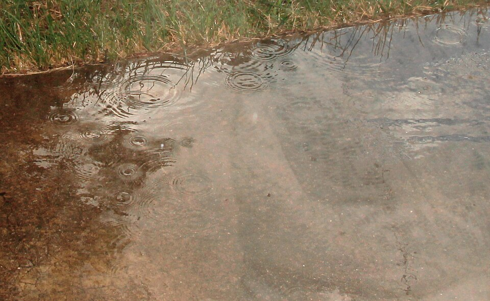
Raindrops on a puddle. Photo: Jean-Marie Vugnon, CC BY-SA 4.0, Wikimedia Commons.CO₂ uptake versus strong acid
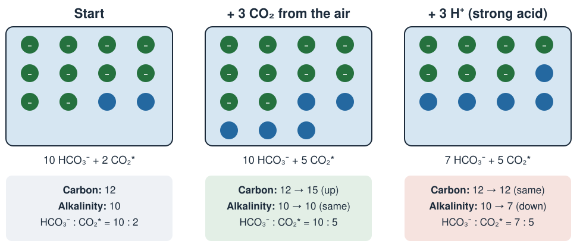
Both inputs lower the HCO₃⁻ : CO₂* ratio, so both lower pH. But CO₂ adds carbon and leaves alkalinity unchanged, while strong acid removes alkalinity and leaves carbon unchanged.
Why alkalinity ignores CO₂
Dissolved CO₂ that reacts makes one H⁺ and one HCO₃⁻ together:
\mathrm{CO_2+H_2O\rightarrow H^++HCO_3^-}
In A_T=[\mathrm{HCO_3^-}]+2[\mathrm{CO_3^{2-}}]+[\mathrm{OH^-}]-[\mathrm{H^+}] they cancel: +1 − 1 = 0.
So added CO₂ can push pH down, but it never removes the reserve. The blue curve has no cliff; the red one does.
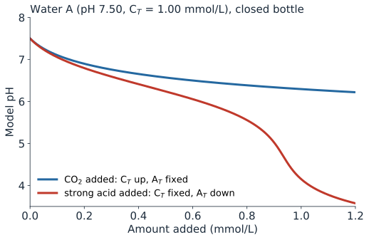
Which way does CO₂ move?
Compare the water’s own CO₂* with K_H\,p_{\mathrm{CO_2}} of the air above it:
- Water higher: CO₂ escapes (degassing). CT falls, AT stays, pH rises.
- Water lower: CO₂ enters (uptake). CT rises, pH falls.
Many lakes and streams, especially in the boreal zone, are supersaturated with CO₂. They receive CO₂-rich soil water and respiring organic matter, and release CO₂ to the air.
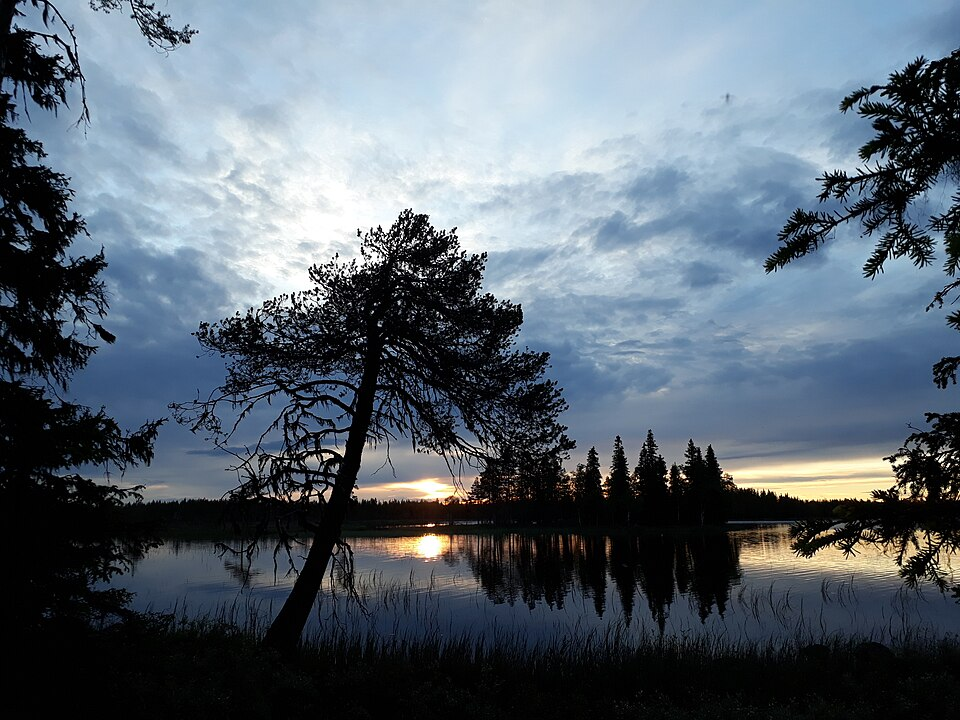
Forest lake, Reivo nature reserve, Norrbotten. Photo: GeorgeInsjon, CC BY-SA 4.0, Wikimedia Commons.Minerals: calcite dissolves and precipitates
\mathrm{CaCO_3(s)\rightleftharpoons Ca^{2+}+CO_3^{2-}}
In natural water, with dissolved CO₂:
\mathrm{CaCO_3+CO_2+H_2O\rightleftharpoons Ca^{2+}+2HCO_3^-}
Each mole dissolved adds 1 mol CT and 2 eq alkalinity. Precipitation removes the same.
Read forward: CO₂-rich soil water dissolves limestone. Read backward: water that loses CO₂ deposits calcite.
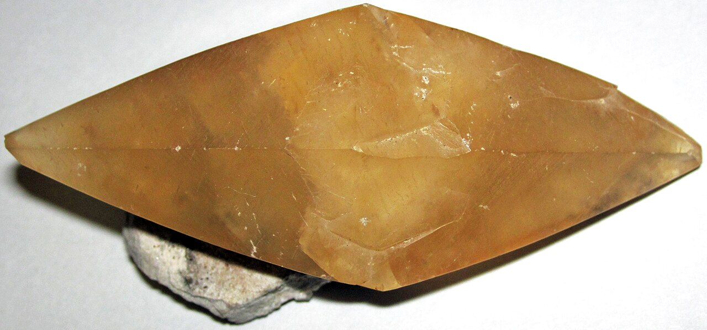
Calcite (CaCO₃) crystal, about 6 cm. Photo: James St. John, CC BY 2.0, Wikimedia Commons.Is calcite stable here? The saturation state
\Omega=\frac{[\mathrm{Ca^{2+}}][\mathrm{CO_3^{2-}}]}{K_{sp}},\quad K_{sp}=3.3\times10^{-9}
- Ω < 1: undersaturated, calcite can dissolve
- Ω = 1: saturated, at equilibrium
- Ω > 1: supersaturated, calcite can form
Use free ion concentrations. At fixed Ca²⁺ and CT, Ω rises about tenfold per pH unit in this range, because carbonate ion does.
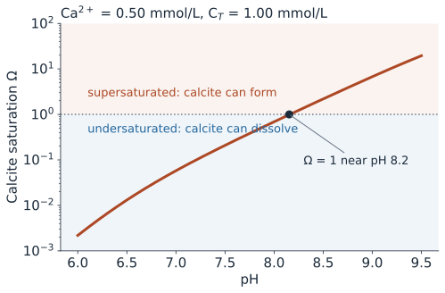
A worked saturation comparison
Two water states, each with free Ca²⁺ = 5.00 × 10⁻⁴ mol/L:
| State | Free CO₃²⁻ (mol/L) | Product | Ω |
|---|---|---|---|
| X | 1.00 × 10⁻⁶ | 5.00 × 10⁻¹⁰ | 0.152 |
| Y | 1.00 × 10⁻⁵ | 5.00 × 10⁻⁹ | 1.52 |
X could dissolve calcite if calcite is present. In Y precipitation is favoured.
Ω does not give a rate or a final mass of calcite. Precipitation itself removes Ca²⁺ and CO₃²⁻, so Ω falls back towards 1 as calcite forms; the amount needs a mass balance.
The kettle, explained
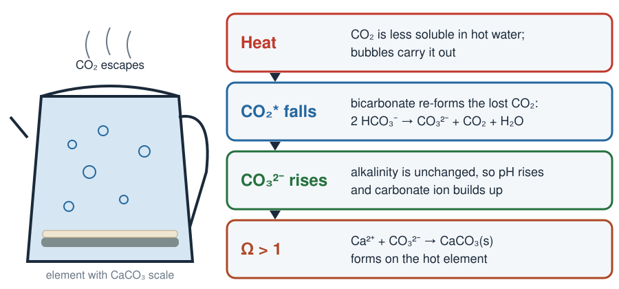
Hard water starts near saturation. Heating drives CO₂ out, the carbonate equilibria shift, CO₃²⁻ rises and Ω passes 1. Calcite also becomes less soluble as temperature rises. The hot element provides the surface where crystals start.
A model: groundwater meets the air
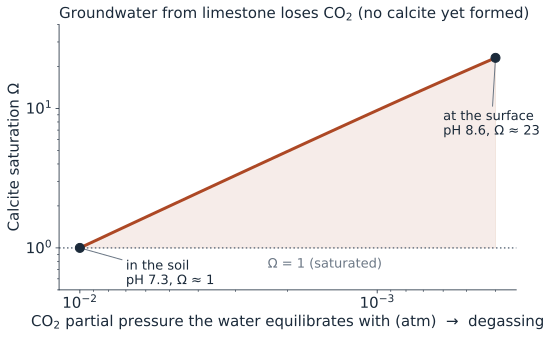
Constructed water: dissolves calcite to saturation under soil air at 0.01 atm CO₂. It ends up with AT ≈ 2.8 meq/L and Ca²⁺ ≈ 1.4 mmol/L, pH ≈ 7.3.
It then emerges and loses CO₂ towards the atmosphere (4.0 × 10⁻⁴ atm) at constant alkalinity:
- pH rises to about 8.6
- Ω rises to about 23
Nature’s kettle needs no heating, only degassing.
Nature’s kettle: tufa at Plitvice
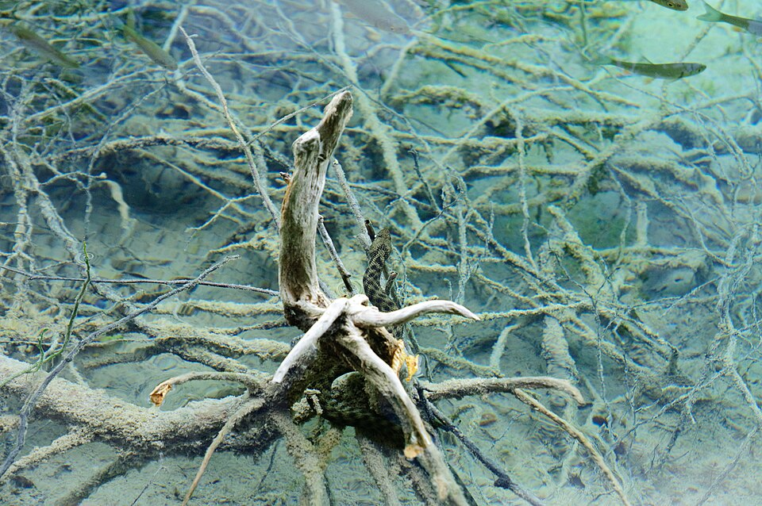
Tufa coating submerged branches, Plitvice Lakes, Croatia. Photo: Alessandro Caproni, CC BY 2.0, Wikimedia Commons.At the Plitvice Lakes in Croatia, water from limestone springs flows over a staircase of lakes and waterfalls.
Turbulent water loses CO₂, becomes supersaturated with calcite, and deposits it as tufa, a porous limestone. Mosses, algae and sunken branches provide surfaces; plants also take up CO₂.
Over thousands of years the tufa has built natural dams that hold the lakes in place.
Underground: stalactites
Rainwater passes through soil, picks up CO₂ and dissolves limestone on its way down. When a drop reaches the open cave, it meets cave air with less CO₂ than the soil.
The drop degasses, Ω rises above 1, and a thin ring of calcite is left behind. Drop by drop this builds stalactites, and the water that falls builds stalagmites.
Growth is slow, often fractions of a millimetre per year, so speleothems are used as climate archives.
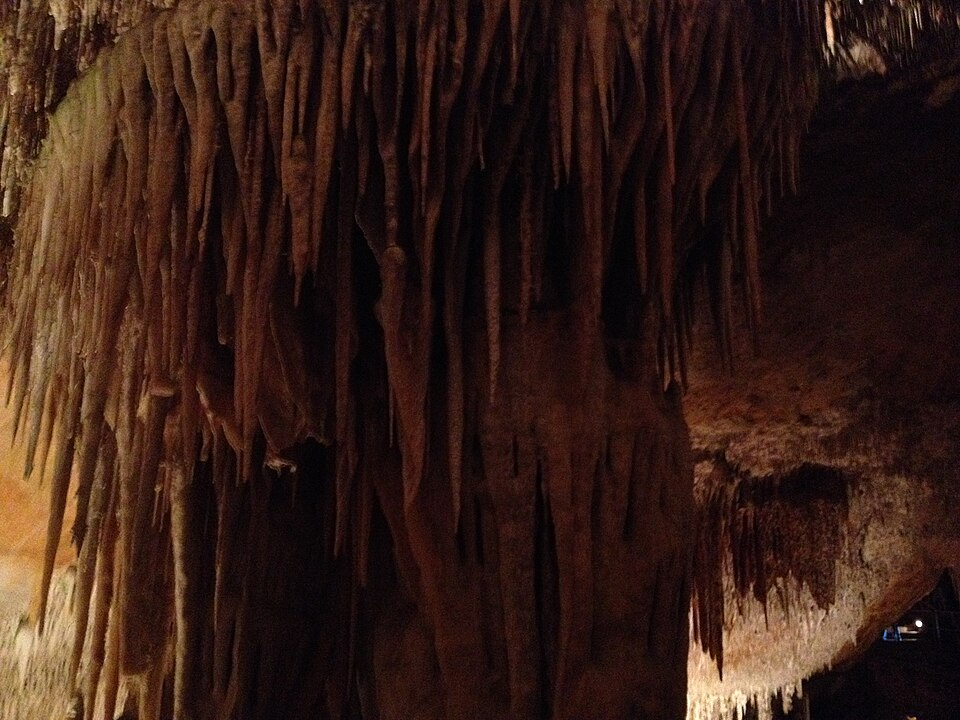
Stalactites in a limestone cave, Mallorca, Spain. Photo: Killarnee, CC BY-SA 4.0, Wikimedia Commons.Supersaturated is not the same as precipitating
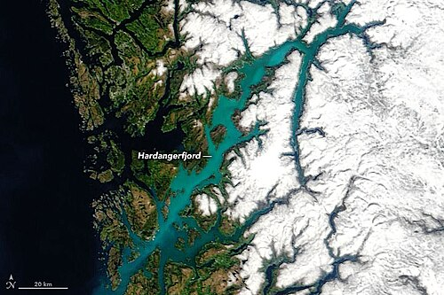
Coccolithophore bloom colouring Hardangerfjord, Norway, 2020 (NASA Terra MODIS). Public domain, Wikimedia Commons.Surface seawater is several times supersaturated with calcite, yet calcite does not simply fall out of the sea. Forming a new crystal needs a nucleation step, and ions such as Mg²⁺ slow crystal growth.
Organisms do it instead: plankton such as coccolithophores build calcite plates. Their blooms turn the sea milky blue.
CO₂ uptake lowers CO₃²⁻ and so lowers Ω, making shell building harder.
All the processes on one map
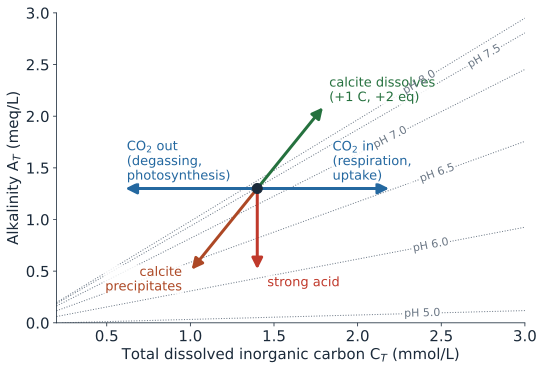
| Process | CT | AT |
|---|---|---|
| CO₂ uptake, respiration | up | same |
| Degassing, photosynthesis | down | same |
| Strong acid | same | down |
| Calcite dissolves | +1 | +2 |
| Calcite forms | −1 | −2 |
Dotted lines show pH. Know which arrow you are on before you calculate.
Check yourself
- A water’s CO₂* is 50 µmol/L. Air above it gives K_Hp=13.6 µmol/L. Which way does CO₂ move, and what happens to pH?
- A lake takes up CO₂ from the air. What happens to CT, to AT, to pH?
- Calcite dissolves into a closed bottle of water. By how much do CT and AT change per mole?
- Ω = 0.4 in a stream with no calcite in its bed. Will the stream dissolve calcite?
- Why is Henry’s law not enough to give pH on its own?
Common mistakes to avoid
- Applying Henry’s law to CT. It gives CO₂* only.
- “CO₂ is an acid, so it lowers alkalinity.” H⁺ and HCO₃⁻ form together; AT is unchanged.
- Fixing pCO₂, pH and CT independently. Usually two fix the third.
- “Ω > 1, so calcite forms now.” Ω gives direction, not rate or amount.
- Using total Ca for free Ca²⁺. Ion pairs lower the free ion.
- Forgetting temperature. Gases and calcite are both less soluble in hot water.
- Using freshwater constants for seawater.
Explore: degassing and calcite saturation
Groundwater from soil air (0.010 atm) degasses to the air: pH rises from 7.26 to 8.65 and Ω from about 1 to about 23.
Follow groundwater from soil air to the open air at fixed alkalinity.
Summary
| Concept | Key fact |
|---|---|
| Henry’s law | [CO₂*] = KH pCO₂; KH = 0.034 mol L⁻¹ atm⁻¹ at 25 °C |
| Gas versus total | Henry fixes CO₂* only; CT needs pH or AT too |
| Clean rain | pure water + air CO₂ → pH ≈ 5.6 |
| CO₂ uptake | CT up, AT unchanged, pH down, no alkalinity cliff |
| Strong acid | CT unchanged, AT down by the dose |
| Degassing | CT down, pH and CO₃²⁻ up |
| Calcite | dissolving adds 1 mol CT and 2 eq AT per mol |
| Saturation | Ω = [Ca²⁺][CO₃²⁻]/Ksp; above 1 favours calcite forming |
| Kinetics | supersaturation can persist; surfaces and organisms help |
| Kettle, cave, tufa | CO₂ loss raises Ω until calcite precipitates |
Next: Organic matter in water. Why are many Swedish lakes turning brown? Then the exercises and the reference sheet.
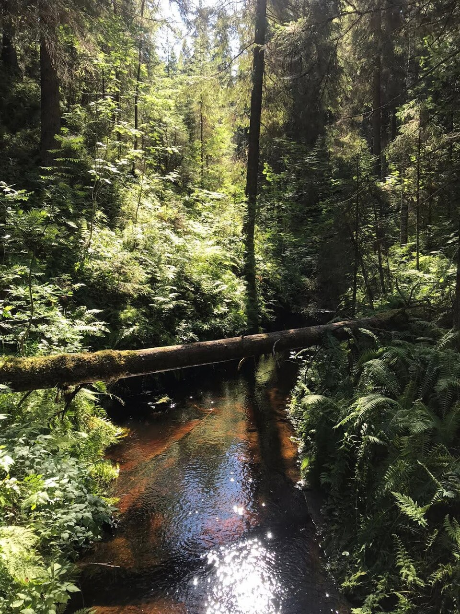
Brown, humic river water, Korkeakoskenjoki, Finland. Photo: Anna Reponen, CC BY 4.0, Wikimedia Commons.